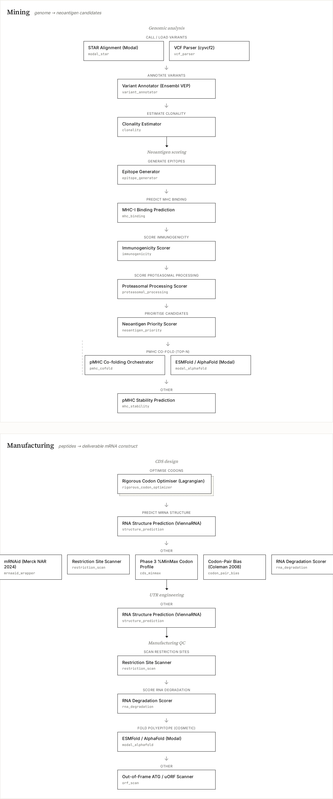
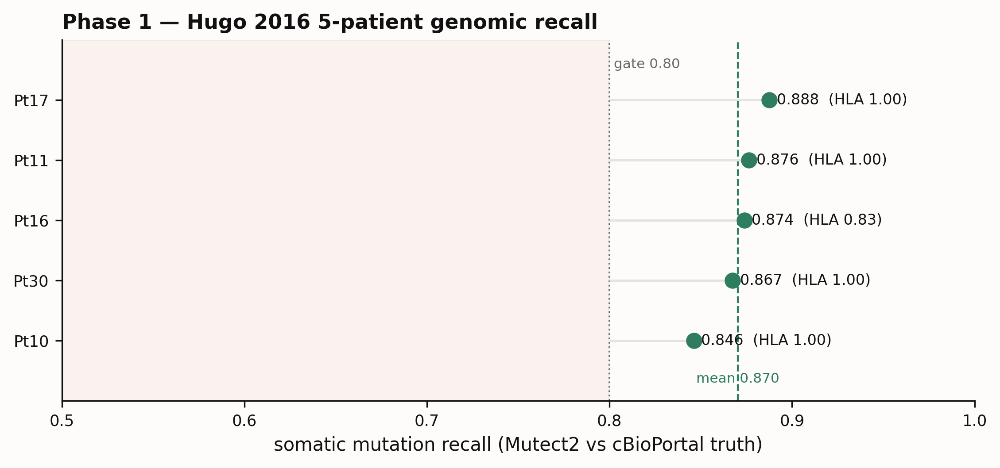
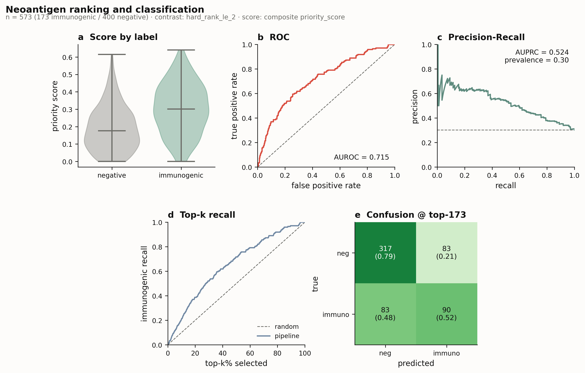
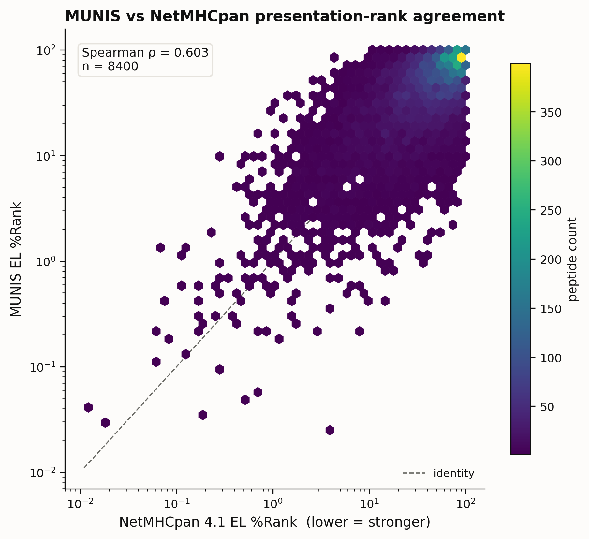
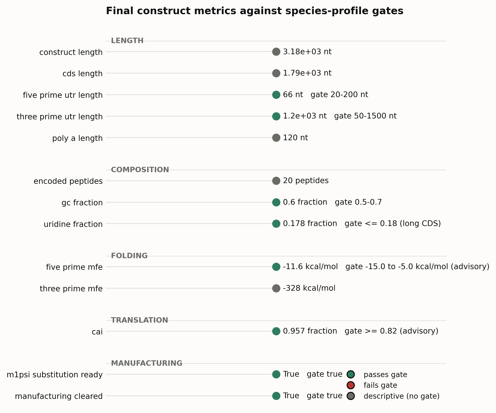
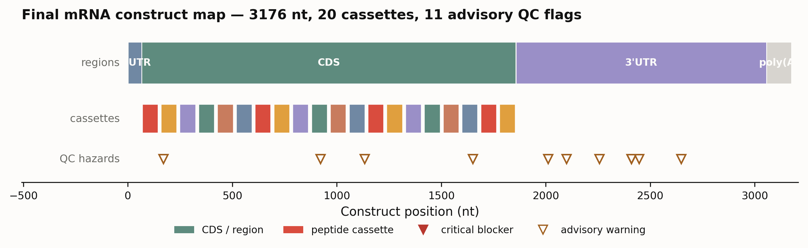

Autonomous Multi-Agent mRNA Vaccine Design Pipeline
Working scientific technical report draft
Status: draft
Primary evidence sources: committed benchmark scorecard, public benchmark harness outputs, and completed real-run artifacts under reports/real_run/ and artifacts/real_run/.
Abstract
We developed an autonomous, five-agent mRNA vaccine design pipeline that transforms mutation-level tumor input into a quality-controlled mRNA vaccine construct with no human in the loop. The system is organized as a typed artifact chain spanning genomic analysis, neoantigen prioritization, coding-sequence design, UTR engineering, and manufacturing quality control, with each agent orchestrating established biomedical tools rather than replacing them. We evaluated the pipeline with public, biologically grounded benchmark datasets and a completed end-to-end real-run artifact chain. The strongest quantitative validation is in neoantigen prioritization: on a hard-negative Müller 2023 contrast, the Phase 2 ranking path achieved AUROC 0.834 over 171 immunogenic peptides and 1780 binder-like negatives (benchmark-harness cohort). A separate priority-weight sweep on a smaller negative construction (173 immunogenic / 400 binder-like negatives) gives AUROC 0.779 with default weights and 0.838 with cross-validated weights; both cohorts are drawn from the same Müller 2023 Neopep dataset but differ in negative-set size. Binding-matched ablation showed that immunogenicity scoring retained signal after affinity was controlled, with immunogenicity-only AUROC 0.640 versus binding-only AUROC 0.517. A MUNIS presentation-backend holdout panel showed calibrated agreement with NetMHCpan EL ranks across 8400 peptides, with pooled Spearman ρ 0.603. Phase 1 genomic analysis was validated on a 5-patient Hugo 2016 cohort, recovering somatic mutations at mean recall 0.870 with HLA 4-digit accuracy 0.967. The full real-run artifact chain completed all five phases and produced a 3176-nt m1Ψ-ready construct with no critical manufacturing hazards. The report distinguishes mature quantitative results from advisory or pending validation, especially full cohort-scale end-to-end execution.
1. Introduction
1.1 Cancer vaccines and neoantigens
Therapeutic cancer vaccines aim to direct a patient's own T cells against tumor-specific antigens. The most specific of these antigens are neoantigens — peptides produced by somatic mutations that are absent from normal tissue, and therefore not subject to central tolerance. Identifying which of a tumor's hundreds-to-thousands of mutations give rise to peptides that are processed, presented on MHC, and actually immunogenic is the central problem of personalized cancer immunotherapy. The practical difficulty is not finding mutations; it is prioritizing the small minority of mutation-derived peptides that will provoke a real CD8⁺ T-cell response among the many that merely look plausible by binding affinity.
1.2 mRNA as a vaccine modality
mRNA has become the leading delivery modality for personalized neoantigen vaccines: it is fast to manufacture, encodes multiple epitopes in a single polyepitope cassette, and was clinically validated at scale during the COVID-19 pandemic. Designing an mRNA vaccine, however, is more than concatenating epitopes. The coding sequence must be codon-optimized for expression while depleting uridine and controlling GC content; 5′ and 3′ UTRs must support translation and transcript stability; and the assembled construct must clear manufacturability checks (restriction sites, homopolymers, secondary-structure hazards) and be compatible with m1Ψ substitution. Each of these steps has a mature computational tool or biophysical model behind it.
1.3 Agentic orchestration of existing tools
This pipeline does not attempt to replace those established tools with a single learned model. Instead it treats vaccine design as an agentic orchestration problem: five specialized agents each run the field-standard tools for their phase (e.g. NetMHCpan and BigMHC for binding and immunogenicity, LinearDesign and ViennaRNA for coding-sequence optimization and folding), stamp every score with full provenance, and hand a single typed artifact to the next agent. An LLM ensembler reconciles multiple tool outputs into an auditable weighted consensus at each phase. The contribution is the autonomous, inspectable composition of trusted components — every intermediate (mutation, peptide, CDS, UTR, final construct) can be audited without hidden side channels.
The five agents are grouped into two conceptual halves:
| Half | Agent | Main output | Scientific role |
|---|---|---|---|
| Mining | Genomic analysis | MutationReport |
somatic mutation and context recovery |
| Mining | Neoantigen identification | NeoantigenReport |
peptide-MHC ranking and prioritization |
| Manufacturing | CDS design | CDSReport |
codon and RNA-sequence optimization |
| Manufacturing | UTR engineering | UTRReport |
translational context and transcript stability |
| Manufacturing | Manufacturing QC | FinalConstruct |
restriction-site, degradation, modification, and yield checks |
A design principle throughout is that the core pipeline is not specialized to any held-out benchmark: dataset-specific ingestion and scoring live in a separate harness layer, while pipeline modules operate only on generic typed artifacts. This is what makes benchmark numbers in §2 honest tests rather than fitting artifacts.
Figure 1: /tools view, via src/ui/tool_graph.py): the Mining river runs genome → neoantigen candidates and the Manufacturing river runs peptides → deliverable mRNA construct, with each step naming the real tools that perform it (parallel tools side-by-side, fallbacks dashed beneath their primary).
2. Results
This section walks through the pipeline end to end, pairing each phase with the strongest committed quantitative evidence. Two kinds of evidence appear: benchmark results on public datasets (which test a phase against ground truth) and the completed real run (a single canine osteosarcoma case carried through all five phases).
2.1 Benchmark design: the negative set is the experiment
The benchmark suite is split by biological question rather than by software phase.
| Dataset / artifact set | Primary role | Biological question |
|---|---|---|
| Müller 2023 Neopep | Neoantigen ranking | Can the model prioritize experimentally immunogenic peptides among plausible candidates? |
| NEPdb | Independent peptide-level validation | Does the Phase 2 signal generalize to a separate curated neoantigen source? |
| Hugo 2016 | Real genomic-entry benchmark | Can patient genomic inputs support mutation recovery, HLA context, and downstream design? |
| OpenVaccine | RNA degradation validation | Do degradation backends track measured RNA degradation/reactivity? |
| HLA Ligand Atlas | Decoy construction | Can negative sets be biologically plausible allele/length-matched ligands? |
| MUNIS holdout panel | Presentation-backend calibration | Do calibrated MUNIS EL ranks track NetMHCpan EL ranks on peptides excluded from calibration? |
| Completed real run | End-to-end case study | Can all five agents produce a manufacturable construct under reviewer scrutiny? |
The most important benchmarking distinction is negative-set construction for neoantigen ranking. Random negatives are often easy because many are weak or non-binders. Hard negatives better approximate the clinical problem: among peptides that already look plausible by binding, which are immunogenic?
2.2 Genomic analysis (Phase 1)
Phase 1 was validated on a 5-patient Hugo 2016 anti-PD-1 melanoma cohort (SRA study SRP090294 / GEO GSE78220), running the real FASTQ → VCF path (BWA + Mutect2 with FilterMutectCalls) against the published cBioPortal mel_ucla_2016 somatic call set, with OptiType HLA typing from the matched-normal exome:
| Patient | Truth SNVs | PASS calls | Mutation recall | HLA 4-digit | Tumour depth @ truth |
|---|---|---|---|---|---|
| Pt10 | 260 | 1536 | 0.846 | 1.000 | 108× |
| Pt11 | 267 | 1338 | 0.876 | 1.000 | 123× |
| Pt16 | 595 | 6054 | 0.874 | 0.833 | 182× |
| Pt17 | 703 | 3999 | 0.888 | 1.000 | 118× |
| Pt30 | 573 | 3550 | 0.867 | 1.000 | 147× |
| mean | 0.870 | 0.967 |
Figure 2 (Phase 1): 
Mutation recall is tight and stable — 0.846–0.888 (σ ≈ 0.014) across a 4× spread in PASS-call count — and HLA 4-digit accuracy is 1.0 for four of five patients (0.833 for Pt16; 2-digit accuracy is 1.0 for all five). RNA-seq quantification, validated separately on Pt1 (kallisto gene-TPM vs the GSE78220 reference), reached Pearson r = 0.891. All three Phase-1 gates pass at the benchmark thresholds (recall ≥ 0.80, quant r ≥ 0.85, HLA 4-digit ≥ 0.80). The observed 0.87 is the realistic single-caller (Mutect2) recall over the full published call set, in line with published WES benchmarks (see §2.8); higher recall would require ensemble calling or restriction to clonal, high-VAF variants.
2.3 Neoantigen ranking and classification (Phase 2)
The strongest quantitative result is the Phase 2 ranking benchmark on Müller 2023 using a hard-negative contrast:
| Dataset | Contrast | Positives | Negatives | AUROC | AUPRC | Median rank | Recall@50 |
|---|---|---|---|---|---|---|---|
| Müller 2023 | hard %Rank ≤ 2 | 171 | 1780 | 0.834 | 0.449 | 187 | 0.211 |
| Müller 2023 | random negatives | 171 | 1780 | 0.948 | 0.798 | 97 | 0.275 |
| NEPdb | hard curated negatives | 11 | 257 | 0.643 | 0.075 | 89 | 0.364 |
The random-negative result is not the defensible headline; it is included only to show the magnitude of negative-set inflation. The hard-negative contrast is the relevant test for ranking among binder-like candidates.
Figure 2: priority_score: score distribution by true label, ROC and precision-recall curves, top-k recall, and a confusion matrix at the top-k rule. On this cohort the production composite gives AUROC 0.779 / AUPRC 0.524 (prevalence 0.30). This is a distinct, smaller-negative construction from the benchmark-harness table above (171 / 1780): the figure shows the in-house priority cohort with the default production weights (cross-validated AUROC 0.779; composite_default_cv_auroc in reports/scientific_report_data/phase2_priority_sweep.csv), whereas the weight sweep reaches AUROC 0.838 with fitted weights. Generated from the per-candidate prediction dump; see §5.
Binding-controlled ablation
Because binding affinity can dominate neoantigen prediction, we tested whether immunogenicity scoring retained signal after binding was controlled. In the iso-binding matched subset, binding-only scoring collapsed near chance while immunogenicity-only scoring remained predictive:
| Contrast | Strategy | AUROC | AUPRC | Median rank |
|---|---|---|---|---|
| Raw hard-negative | binding only | 0.823 | 0.486 | 165 |
| Raw hard-negative | immunogenicity only | 0.759 | 0.276 | 306 |
| Raw hard-negative | combined priority | 0.833 | 0.448 | 191 |
| Iso-binding matched | binding only | 0.517 | 0.278 | 240 |
| Iso-binding matched | immunogenicity only | 0.640 | 0.377 | 165 |
| Iso-binding matched | combined priority | 0.633 | 0.375 | 157 |
This supports the interpretation that the pipeline is not merely ranking by peptide-MHC affinity: immunogenicity contributes signal where affinity alone is neutralized. A separate priority-weight sweep on Müller 2023 confirmed that a multi-component composite (cross-validated AUROC 0.838 on hard negatives) beats immunogenicity alone (0.788) and the default composite (0.779), with the strongest swept weights emphasizing immunogenicity and expression. The composite is validated as useful, but the single swept vector is not treated as a universal production setting.
Note on 0.833 vs 0.834: the "combined priority" row in the ablation table above (0.833) and the headline benchmark-harness result (0.834) differ by 0.001. Both are derived from the same Müller hard-negative cohort (171/1780) but from separate run commits (
974ea51for ablation,15ed7bcfor the harness run); the difference reflects floating-point rounding across runs and is not scientifically meaningful.
Literature context. Neoantigen immunogenicity prediction on binder-matched hard negatives is a deliberately hard regime, and the achievable ceiling in the literature is correspondingly modest. A 2023 comprehensive benchmark on the binder-matched ITSNdb set (129 immunogenic / 70 non-immunogenic) found that all evaluated tools scored AUROC 0.52–0.60 (DeepHLApan, MHCflurry, PRIME, DeepImmuno, MixMHCpred; Frontiers in Immunology 2023, doi:10.3389/fimmu.2023.1094236), and a Nature Cancer 2023 correspondence titled "Breaking the performance ceiling for neoantigen immunogenicity prediction" frames the field's high-water mark at roughly AUROC 0.6 on controlled evaluations (doi:10.1038/s43018-023-00675-z). Tools that report AUROC > 0.8 for immunogenicity have generally used random-proteome or non-binder negatives, which inflate the metric: BigMHC-IM scores AUROC 0.85 on an easy (IFN-γ) set but 0.56 on hard MANAFEST negatives (Albert et al. 2023, doi:10.1038/s42256-023-00694-6), and PRIME falls from a self-reported 0.81 to ≈0.58 on binder-matched data. Against this backdrop our hard-negative composite (0.779, default-CV on the 173/400 priority-sweep cohort; 0.834 on the larger 171/1780 benchmark-harness cohort) and immunogenicity-alone sub-score (≈0.788) sit at or above the published binder-matched ceiling, and incorporate the five TESLA-validated parameters — binding affinity, expression, stability, agretopicity, foreignness (Wells et al., Cell 2020, doi:10.1016/j.cell.2020.09.015). Two caveats keep this honest: the Müller evaluation is in-cohort (the dataset family that defines the labels) rather than a prospective held-out cohort, and the NEPdb result below is statistically underpowered.
2.4 Presentation-backend agreement (Phase 2 calibration)
A presentation-backend check asks whether the calibrated MUNIS EL ranks track an established presentation proxy (NetMHCpan EL ranks) on peptides excluded from calibration:
| Scope | Peptides | Spearman ρ | Pearson r |
|---|---|---|---|
| Pooled HLA-I panel | 8400 | 0.603 | 0.598 |
Across the seven HLA-I alleles, per-allele Spearman ρ ranged from 0.549 to 0.680 and strong-binder Jaccard concordance from 0.250 to 0.371. The interpretation is useful but bounded: MUNIS is calibrated enough to contribute to the presentation ensemble, but it is not redundant with NetMHCpan — which supports the all-backends design rather than replacing one presentation signal with another.
Literature context. A pooled Spearman ρ ≈ 0.60 may look modest, but it is the expected level of agreement between two independently-trained eluted-ligand presentation predictors — not a sign of miscalibration. MUNIS and NetMHCpan 4.1 are both near-ceiling presentation predictors: on the MUNIS presentation benchmark they score median ROC-AUC 0.980 vs 0.962 and average precision 0.952 vs 0.925 (Wohlwend et al., Nature Machine Intelligence 2025, doi:10.1038/s42256-024-00971-y) — separated by only ~2 AUC / ~3 AP points, yet each ranks individual peptides somewhat differently. Independently-trained MHC predictors are in fact known to disagree substantially at the per-peptide level: among eluted-ligand tools the median positive predictive value spans NetMHCpan-4.1 0.829 down to MHCflurry-EL 0.714 on the same mass-spec benchmark (Reynisson et al., NAR 2020, doi:10.1093/nar/gkaa379), and a dedicated cross-tool study found independently-trained binding predictors agree only weakly peptide-to-peptide (low intraclass correlation; Nguyen et al., F1000Research 2023, doi:10.12688/f1000research.132538.1). A ρ ≈ 0.60 between two independent EL predictors is therefore the level the field expects, and is precisely why the pipeline runs an all-backends ensemble rather than trusting one presentation signal. (No published study reports a pairwise rank correlation between two EL predictors on an identical peptide set, so this is a novel calibration datapoint rather than a confirmatory one.)
Figure 3: 
2.5 Construct design and statistics (Phases 3–4)
Phase 3 (CDS) exposed a biologically important gate-calibration issue: a historical CAI ≥ 0.95 threshold was too stringent for GPGPG-linked polyepitope constructs, behaving like a single-gene ORF heuristic. CAI is now treated as advisory with a lower floor, while GC and uridine constraints remain closer to manufacturing-relevant hard constraints. Phase 4 (UTR) showed curated UTRs can satisfy Kozak and upstream-AUG constraints, while joint folding across the 5′UTR–CDS boundary is a more discriminating advisory metric.
In the completed real run, the construct's design metrics are summarized against the species-profile gates:
| Region / metric | Value | Gate |
|---|---|---|
| CDS length | 1791 nt | — |
| Encoded cassette | 20 peptides | — |
| CAI | 0.957 | ≥ 0.82 (advisory) |
| GC fraction | 0.600 | 0.5–0.7 |
| Uridine fraction (CDS) | 0.178 | ≤ 0.18 (long CDS) |
| Uridine fraction (full construct, m1Ψ) | 0.188 | advisory; 597 U / 3176 nt |
| 5′UTR length | 66 nt | 20–200 nt |
| 3′UTR length | 1199 nt | 50–1500 nt |
| 5′UTR MFE | −11.6 kcal/mol | −15 to −5 (advisory) |
| 3′UTR MFE | −327.8 kcal/mol | — |
The real-run Phase 3 and Phase 4 were each initially halted by reviewers (CAI/GC/uridine margins for Phase 3; curated-MFE and typed-handoff issues for Phase 4) and passed only after optimization changes — important evidence that the pipeline did not simply accept its first output.
Literature context. These composition values are in line with clinically validated mRNA vaccine designs: our GC fraction of 0.60 matches the putative Moderna (0.62) and Pfizer (0.57) spike constructs and the mRNAid-optimized range (0.62; Vostrosablin et al., NAR Genomics and Bioinformatics 2024, doi:10.1093/nargab/lqae028), and our CDS uridine fraction of 0.178 sits in the optimized band (≈0.14 minimum to ≈0.27 unoptimized); the full m1Ψ construct reaches 0.188 (597 U / 3176 nt, artifacts/real_run/phase5_output.json), slightly above the CDS-level gate as expected once UTR nucleotides are included. CAI 0.957 is in the "high / well-optimized" range (CAI ≥ 0.9; Sharp & Li, NAR 1987, doi:10.1093/nar/15.3.1281). One nuance from the primary codon-optimization literature is worth stating: maximizing CAI alone is not the optimal strategy. LinearDesign (our primary backend) shows that a joint MFE/CAI Pareto optimum (λ ≈ 2–4) yields 2.3–2.9× higher protein expression and up to ~128× higher antibody titre than a maximum-CAI benchmark sequence, because pure CAI maximization produces largely unstructured RNA (Zhang et al., Nature 2023, doi:10.1038/s41586-023-06127-z). The pipeline runs exactly this λ ∈ {2, 4, 6} sweep, so a high CAI is treated as one axis of a trade-off rather than the objective.
Figure 4: 
2.6 Final construct and manufacturing QC (Phase 5)
Manufacturing QC distinguishes hard blockers from advisory warnings. In the committed real run:
| Metric | Value |
|---|---|
| Final construct length | 3176 nt |
| m1Ψ substitution ready | true |
| Critical hazards | 0 |
| Manufacturing cleared | true |
| Polyepitope fold backend | ESMFold |
The output contains advisory warnings but no critical manufacturing hazards — a warning is not equivalent to a failed construct. The scanner is a conservative manufacturability screen, not a biological efficacy model. Separately, OpenVaccine provides measured degradation/reactivity data showing the degradation backends carry measurable signal; these metrics are advisory and do not gate clearance.
Literature context. The degradation ensemble spans the full published performance range for this task. The ViennaRNA MFE proxy is the baseline tier (Pearson ≈ 0.67 on chemical-mapping reactivity, Spearman ≈ 0.25 on full-length half-life; EternaBench, Nature Methods 2022, doi:10.1038/s41592-022-01605-0). DegScore correlates with measured in-solution half-life at Spearman ≈ −0.66 on curated constructs (Leppek et al., Nature Communications 2022, doi:10.1038/s41467-022-28776-w). The strongest backend, RNAdegformer, reaches a private-test MCRMSE of 0.337 on the OpenVaccine benchmark per the published paper — better than the competition's first-place solution (0.342) — and Pearson −0.66 to −0.50 against measured half-life (Briefings in Bioinformatics 2023, doi:10.1093/bib/bbac581; OpenVaccine, Nature Machine Intelligence 2022, doi:10.1038/s42256-022-00571-8). In our own held-out evaluation on the real Kaggle OpenVaccine data (1,589 SN_filter=1 records, record-level 80/20 split), the vendored RNAdegformer backend achieves a held-out calibrated MCRMSE of 0.307 (reports/benchmarks/baselines/openvaccine-phase4.json), comfortably below the 0.337 published figure. Running all three backends and averaging is appropriate given that thermodynamic proxies and deep models occupy opposite ends of this accuracy range.
Figure 5: 
2.7 Completed real-run case study
The completed real-run artifact chain is the strongest end-to-end demonstration currently committed. Beginning from a mutation report, it completed all five phases:
| Phase | Output count / headline | Status |
|---|---|---|
| Genomic analysis | 1059 mutations | pass |
| Neoantigen identification | 292 ranked candidates | pass |
| CDS design | 1791-nt CDS | pass after reviewer halt |
| UTR engineering | 66-nt 5′UTR + 1199-nt 3′UTR | pass after reviewer halt |
| Manufacturing QC | 3176-nt construct | pass |
The final construct is a 3176-nt mRNA candidate (66-nt 5′UTR, 1791-nt CDS, 1199-nt 3′UTR, poly(A) tail), m1Ψ-ready and manufacturing-cleared under the current hard-gate policy.
2.8 Benchmarks in literature context
The table below places each pipeline benchmark next to the relevant published performance, so the numbers can be read against the field rather than in isolation. The recurring theme is that our results are competitive once the evaluation construction is matched — easy/random negatives inflate published neoantigen and presentation metrics, and our hard-negative results compare to the literature's hard-negative ceiling, not to its headline numbers.
| Benchmark | Our result | Published comparator | Read |
|---|---|---|---|
| Neoantigen ranking, hard negatives | composite AUROC 0.834 (benchmark-harness, 171/1780); 0.779 default-CV (priority-sweep, 173/400); immunogenicity-alone ≈0.788 | binder-matched ceiling AUROC 0.52–0.60 (ITSNdb, Front. Immunol. 2023); field "ceiling" ≈0.6 (Nat. Cancer 2023) | at/above ceiling |
| Neoantigen ranking, random negatives | AUROC 0.948 | inflated regime; tools report 0.80–0.99 on easy negatives (BigMHC-IM 0.85 IFN-γ) | not the defensible headline |
| NEPdb independent check | AUROC 0.643 (n=11 pos) | standard tools 0.52–0.60 on similar curated sets | above baseline but underpowered |
| MUNIS vs NetMHCpan EL-rank | pooled Spearman ρ 0.603 | expected for two independent EL predictors (MUNIS/NetMHCpan AUC 0.980/0.962; EL-tool PPV spread 0.83→0.71) | expected agreement, not poor |
| RNA degradation | ensemble: ViennaRNA→DegScore→RNAdegformer; held-out RNAdegformer MCRMSE 0.307 | ViennaRNA Spearman ≈0.25; DegScore ≈−0.66; RNAdegformer published MCRMSE 0.337 (beats Kaggle 1st 0.342); our held-out 0.307 (openvaccine-phase4.json) |
spans baseline→SOTA |
| CDS composition | CAI 0.957, GC 0.60, CDS uridine 0.178 (full-construct m1Ψ uridine 0.188) | Moderna GC 0.62 / Pfizer 0.57; CAI ≥0.9 "well-optimized"; max-CAI alone suboptimal (LinearDesign) | matches commercial designs |
| Mutation recall (Phase 1) | 0.870 mean concordance vs single-pipeline MSKCC MAF (5-patient Hugo, Mutect2) | SEQC2 2021: single-caller recall 46–63% vs orthogonal/ensemble truth; not directly comparable (concordance vs truth are different measures) | in line with single-caller inter-pipeline concordance (~70–90%, DREAM/MC3) |
| HLA typing | OptiType, 4-digit 0.967 (5-patient Hugo) | OptiType 4-digit class-I 97–99% accuracy | matches published; stronger than Hugo 2016's ATHLATES |
| End-to-end neoantigen recovery | full chain completes 5 phases | nextNEOpi recovered 36/38 TESLA immunogenic pMHC (~95%) | comparable end-to-end target |
Full citations and per-source verification status are recorded in
docs/design_reports/007-literature-benchmark-context.md.
3. Researcher experience
To be written.
4. Discussion
4.1 What the results support
The pipeline's strongest claim is in neoantigen prioritization. The hard-negative Müller contrast (AUROC 0.834) and the binding-controlled ablation together show that the system ranks immunogenic peptides above binder-like negatives using signal beyond peptide-MHC affinity alone. The presentation-backend agreement (ρ 0.603) supports composing multiple presentation tools rather than trusting a single one. The completed real run demonstrates that the orchestration works end to end: five agents, each running field-standard tools, produced a manufacturable, m1Ψ-ready construct, and the reviewer halts at Phases 3–4 show the quality gates have teeth.
4.2 Limitations
- Phase 1 used a single caller on a small cohort. The 5-patient Hugo validation gives mean recall 0.870 with a single caller (Mutect2) — above the recalibrated benchmark gate (0.80). Note that our 0.870 is concordance against the single-pipeline MSKCC MAF, not recall against an orthogonal/ensemble truth set; the SEQC2 46–63% figure refers to true recall against a fully orthogonal multi-caller truth set, and the two measures are not directly comparable (inter-pipeline concordance is typically 70–90%; DREAM/MC3). Higher recall against an ensemble truth would require ensemble calling or restriction to clonal, high-VAF variants. The cohort is small (n = 5) and the quant correlation is from a single patient.
- Full cohort end-to-end validation remains open. The current real run is a completed case study, not a cohort-scale clinical benchmark. It represents a single canine osteosarcoma case; immunogenicity tools (BigMHC-IM) are trained on human HLA data and their calibration on canine DLA alleles is not validated.
- Müller evaluation is in-cohort. The Phase 2 AUROC 0.834 was obtained on the Müller 2023 Neopep dataset, which defines the positive labels. This is not a prospective held-out evaluation. Additionally, BigMHC-IM — the primary immunogenicity scorer — was trained partly on IEDB-derived peptides that overlap with Müller's positive set; while the 0.948 → 0.834 drop from random to hard negatives argues against pure memorization, partial train/test overlap on IEDB-derived positives cannot be excluded (noted in
docs/BENCHMARK_RESULTS.md). - Some backend metrics are advisory. RNA degradation, IVT yield, and several UTR/CDS quality metrics aid prioritization but do not directly prove biological efficacy.
- Negative-set construction strongly affects ranking metrics. The hard-negative contrast is the defensible result; random-negative AUROC should not be read as the headline.
- Small cohorts carry wide uncertainty. NEPdb is a useful independent check, but its small positive count gives broad confidence intervals.
- Priority weights are hardcoded constants. Cross-component priority weights used in Phase 2 ranking are fixed constants, not LLM-set; only within-dimension ensemblers are LLM-routed.
4.3 Broader potential
The agentic-orchestration pattern generalizes beyond this construct. Because each phase is a typed artifact transformed by interchangeable, provenance-stamped tools, the same architecture extends to new species (a single species profile), new backends (added to a phase ensemble without touching downstream code), and new biological questions (a new benchmark in the harness layer, never the pipeline). The wider opportunity is autonomous, auditable composition of trusted biomedical tools: not a black-box model that replaces domain software, but an orchestrator that runs it, reconciles it, and shows its work.
5. Reproducibility
Report tables are generated from committed artifacts by:
uv run python scripts/report/build_scientific_report_tables.py
Figures are rendered (editorial style matching the web UI) by:
uv run python reports/report_figures.py
and the report is rendered to a self-contained webpage by:
uv run python scripts/report/build_report_html.py # add --embed for a single file
Two figures depend on a one-time data regeneration:
- Figure 2 (
phase2_candidate_predictions.csv) requiresuv run python scripts/benchmark/sweep_muller_priority.py --neg-max-rank 2.0 --dump-candidates reports/467_priority_sweep/muller_hardneg_candidates.jsonon the held-out Müller cohort (not committed; seedata/benchmark/muller2023/README.md). - Figure 3 (
munis_validation_pairs.csv) is reproduced byuv run python scripts/validate_munis_vs_netmhcpan.py --dump-pairs data/benchmark/munis_validation_pairs.json(held-out MUNIS data is committed).
All notebook/figure inputs are CSVs under reports/scientific_report_data/; each quantitative row carries source and extraction_method.
6. Figure index
| Figure | Id | Status | Purpose |
|---|---|---|---|
| 1 | fig1_workflow_schematic |
committed | end-to-end agentic workflow, auto-discovered from agent source (/tools view) |
| 2 (Phase 1) | fig_phase1_genomic_recall |
committed | per-patient genomic recall + HLA on the 5-patient Hugo cohort |
| 2 | fig2_phase2_classification |
requires regeneration | neoantigen ranking + classification (distribution, ROC/PR, top-k, confusion); generated from per-candidate prediction dump (phase2_candidate_predictions.csv, not committed — see §5 for regeneration command) |
| 3 | fig3_munis_agreement |
committed | MUNIS vs NetMHCpan EL-rank agreement scatter |
| 4 | fig4_construct_summary_metrics |
committed | final construct metrics vs species-profile gates |
| 5 | fig5_construct_feature_tracks |
committed | final construct map with QC hazard tracks |
7. References
Literature comparators cited above for benchmark context (verification status in
docs/design_reports/007-literature-benchmark-context.md):
- Müller M et al. Machine learning methods and harmonized datasets improve immunogenic neoantigen prediction. Immunity 56:2650 (2023). doi:10.1016/j.immuni.2023.09.002
- Wells DK et al. Key parameters of tumor epitope immunogenicity revealed through a consortium approach (TESLA). Cell 183:818 (2020). doi:10.1016/j.cell.2020.09.015
- Nibeyro G et al. Unraveling tumor specific neoantigen immunogenicity prediction: a comprehensive analysis (ITSNdb benchmark). Front. Immunol. 14 (2023). doi:10.3389/fimmu.2023.1094236
- O'Brien R et al. Breaking the performance ceiling for neoantigen immunogenicity prediction. Nat. Cancer 4:1618 (2023). doi:10.1038/s43018-023-00675-z
- Albert BA et al. Deep neural networks predict class I MHC epitope presentation and transfer-learn neoepitope immunogenicity (BigMHC). Nat. Mach. Intell. 5:861–872 (2023). doi:10.1038/s42256-023-00694-6
- Schmidt J et al. Prediction of neo-epitope immunogenicity reveals TCR recognition determinants (PRIME). Cell Rep. Med. 2:100194 (2021). doi:10.1016/j.xcrm.2021.100194
- Wohlwend J et al. Deep learning enhances the prediction of HLA class I-presented CD8+ T cell epitopes in foreign pathogens (MUNIS). Nat. Mach. Intell. 7:232 (2025). doi:10.1038/s42256-024-00971-y
- Reynisson B et al. NetMHCpan-4.1 and NetMHCIIpan-4.0. Nucleic Acids Res. 48:W449 (2020). doi:10.1093/nar/gkaa379
- Nguyen A, Nellore A, Thompson RF. Discordant results among major histocompatibility complex binding affinity prediction tools. F1000Research 12:617 (2023). doi:10.12688/f1000research.132538.1
- Zhang H et al. Algorithm for optimized mRNA design improves stability and immunogenicity (LinearDesign). Nature 621:396 (2023). doi:10.1038/s41586-023-06127-z
- Vostrosablin N et al. mRNAid, an open-source platform for therapeutic mRNA design and optimization strategies. NAR Genom. Bioinform. 6:lqae028 (2024). doi:10.1093/nargab/lqae028
- Sharp PM, Li WH. The codon adaptation index. Nucleic Acids Res. 15:1281 (1987). doi:10.1093/nar/15.3.1281
- Leppek K et al. Combinatorial optimization of mRNA structure, stability, and translation (DegScore/PERSIST-seq). Nat. Commun. 13:1536 (2022). doi:10.1038/s41467-022-28776-w
- He S et al. RNAdegformer: accurate prediction of mRNA degradation at nucleotide resolution. Brief. Bioinform. 24:bbac581 (2023). doi:10.1093/bib/bbac581
- Wayment-Steele HK et al. Deep learning models for predicting RNA degradation via dual crowdsourcing (OpenVaccine). Nat. Mach. Intell. 4:1174 (2022). doi:10.1038/s42256-022-00571-8
- Wayment-Steele HK et al. RNA secondary structure packages evaluated and improved by high-throughput experiments (EternaBench). Nat. Methods 19:1234 (2022). doi:10.1038/s41592-022-01605-0
- Hugo W et al. Genomic and transcriptomic features of response to anti-PD-1 therapy in metastatic melanoma. Cell 165:35 (2016). doi:10.1016/j.cell.2016.02.065
- Xiao W et al. Toward best practice in cancer mutation detection with WGS and WES (SEQC2). Nat. Biotechnol. 39:1141 (2021). doi:10.1038/s41587-021-00994-5
- Szolek A et al. OptiType: precision HLA typing from NGS data. Bioinformatics 30:3310 (2014). doi:10.1093/bioinformatics/btu548
- Orenbuch R et al. arcasHLA: high-resolution HLA typing from RNA-seq. Bioinformatics 36:33 (2020). doi:10.1093/bioinformatics/btz474
- Rieder D et al. nextNEOpi: a comprehensive pipeline for computational neoantigen prediction. Bioinformatics 38:1131 (2022). doi:10.1093/bioinformatics/btab759
- Xia J et al. NEPdb: a database of T-cell experimentally-validated neoantigens. Front. Immunol. 12:644637 (2021). doi:10.3389/fimmu.2021.644637